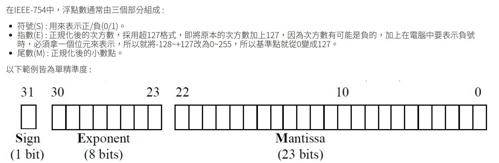
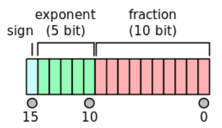
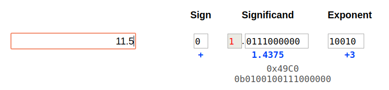
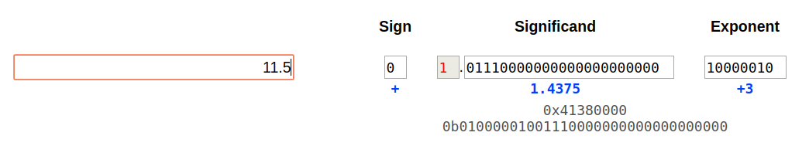

IEEE-754
曾出現過各種不同的浮點數表示法，但目前最通用的是IEEE二進制運算標準
=> Mantissa就是數字小數部份的表示
(IEEE Standard for Binary Floating-Point Arithmetic , 簡稱IEEE-754)
(1) float32

(2) float16
IEEE 754 标准指定了一个 binary16 要有如下的格式：
Sign bit（符号位）： 1 bit
Exponent width（指数位宽）： 5 bits
Significand precision(Mantissa)（尾数精度）： 11 bits （有10位被显式存储）
=> 所以和float32相比就是exponent and mantissa可以用的個數比較少

Example1
13.125 轉浮點數為例 :
(1) 由於13.125為正，所以符號(S) = 0
(2) 先將數值轉成二進位並正規化 13.125 = 1101.001 = 1.101001 x 2^3
=> 所以重點是要將數值變成1.xxxxxx x 2^x 的表示
(3) 計算指數(Exponent) = 127 + 3 (原本的次方數加上127，因為次方數有可能是負的)
= 01111111 + 11 = 10000010
(4) 計算尾數(Mantissa) = 101001，因為正規化後一定是1.xxxx，所以不需要儲存個位數
(5) 將各個數值填入浮點數規格中
S——–E———————M———————–
0 10000010 101001 0000 0000 0000 0000 0
這樣就就完成了10進制轉IEEE-754浮點數
Example2
而浮點數轉10進制也是一樣
將剛剛的0 10000010 10100100000000000000000轉10進制 :
(1) 由於S = 0，所以此數為正
(2) 中間8位元的超127指數(E)為 b'10000010，將其還原130 – 127 =
b'10000010 – b'0111111 可得 3 = b'11
=> 所以要將尾數乘上2^3
(3) 最右邊23個為位元值為101001……，將隱藏的個位數還原，
可得1.101001…… (反正就是多一個1.xxx)
(4) 最後將還原後的尾數乘上指數 1.1010012 x 2^3，並轉為10進位，即可得到 13.125
Example3
這邊有範例
裡面的Significand就是這邊講的mantissa
http://weitz.de/ieee/
分別用兩個表示法表達同一個數字(11.5)
因為這個mantissa的精確度float16可以cover
=> 可以看到兩者個mantissa完全一樣
=> 這個數字做float32 to float6,不會掉精確度
=> 至於exponent都是+3所以都可以表示
=> 至於一般再做轉換的時候,流程可以看底下link
=> 會先算出float16的exponent再來才是他的mantissa(然後會考慮rounding)
=> https://github.com/evansin100/Float/blob/master/float32-to-float16/README.md

